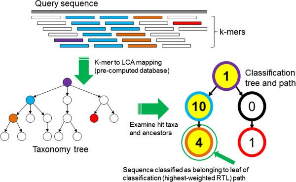
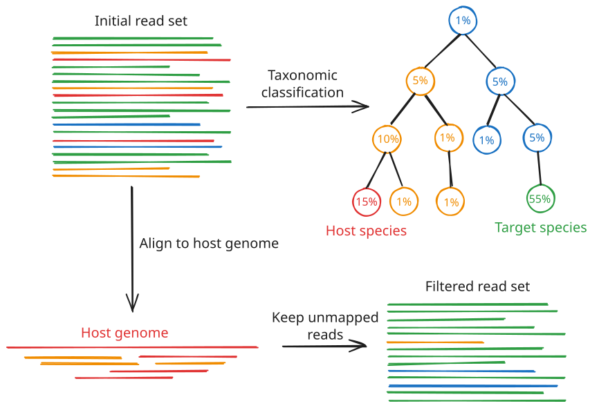

Lesson 4 - Species identification
Learning objectives
- Explain the need for species identification from long read sequencing
- Explain how a read's species of origin can be determined from raw sequencing data
- Use specialised tools like
kraken2to identify the species of origin and potential contamination of a sample
4.1 Basics of species identification using long read sequencing data
Up to now, we have focused on assessing the technical quality of the sequencing reads and filtering them to retain only the best reads. However, this tells us nothing about the origin of those reads. In our scenario, we are attempting to sequence cultured bacterial colonies and determine: (a) what species they are, and (b) what antimicrobial resistance genes they carry, if any. The goal of this lesson is to address that first question: what species do our sequencing reads originate from? At the same time, we can assess whether our samples have been contaminated or not. In theory, each sample should consist of a single species, but of course in the real world we expect some level of cross-contamination, where some fraction of our reads have originated from a different species that was captured in the same sample. If the lab work was done correctly, this contamination should be minimal, but we need to check this is the case before proceeding with genome assembly and downstream analysis, as these steps make the assumption that we are dealing with a single species.
Why do this before assembly?
It is worth pausing on why we run this check now, at the raw-read stage, rather than waiting until we have an assembled genome. There are two practical reasons:
- Contamination breaks assembly. Genome assemblers for bacterial isolates assume the reads come from a single genome. If a meaningful fraction of reads belongs to a second organism, the assembler may produce extra contigs, tangled or misjoined sequences, or a chimeric assembly that is difficult to interpret. Catching this early means we can either re-culture, re-sequence, or filter the reads before we waste time (and compute) on a flawed assembly.
- Sample tracking and mislabelling. Sometimes, samples get swapped, barcodes get misassigned, and cultures get mixed up. A quick species check is one of the cheapest and most effective ways to confirm that the sample you think you sequenced is the sample you actually sequenced. If you sent off what you believed was Escherichia coli and the reads come back overwhelmingly Klebsiella pneumoniae, you want to know that before you build a story around the wrong organism.
4.1.1 How can we identify a species from raw reads?
How can we determine what the species of origin of our reads are before we have even done genome assembly? Algorithms like BLAST exist to compare a given query sequence against a database of known sequences, but this approach uses a slower, alignment-based method which doesn't scale well to thousands or millions of long read sequences. Instead, faster tools like kraken and its successor kraken2 have been developed to address this issue. These tools essentially break the query reads down into small chunks called k-mers and use a fast lookup algorithm to search for matches in a large database. The approach doesn't give you the detailed alignment information that BLAST would, but does allow for a much quicker estimation of the species of origin for each read.
What is a k-mer?
A k-mer is simply a substring of length k taken from a longer sequence. For example, the 4-mers of the sequence ACGTTG are ACGT, CGTT, and GTTG. By sliding a window of length k along a read, we can break any read into a set of overlapping k-mers. Kraken2 does exactly this, then looks up each k-mer in a precomputed database that maps k-mers to the taxonomic groups they are known to occur in.
4.1.2 How Kraken2 assigns a read to a species
The core idea behind Kraken2 is this: different species have different genomes, and therefore different sets of characteristic k-mers. If we build a database that records which taxonomic group(s) each k-mer is associated with, then we can classify a new read by looking at which k-mers it contains.
At a high level, the process for a single read is:
- Break the read into k-mers. The read is decomposed into its constituent k-mers (Kraken2 actually uses minimizers, a compact representative of each group of k-mers, to keep the database small and lookups fast).
- Look up each k-mer in the database. Each k-mer maps to the lowest common ancestor (LCA) of all the genomes that contain it. A k-mer unique to E. coli maps to E. coli; a k-mer shared across the whole family maps to Enterobacteriaceae; a k-mer shared across all bacteria maps to the domain Bacteria.
- Build a classification tree and score it. The k-mer matches are laid out onto the taxonomic tree and the read is assigned to a node in that tree as specifically as the evidence allows. If the read has enough species-specific k-mers it will get assigned to the species level; otherwise if the k-mer matches are more ambiguous, the read will get assigned to a higher rank, e.g. genus or family.

Kraken read classification algorithm. Source: Wood and Salzberg, 2014. Kraken: ultrafast metagenomic sequence classification using exact alignments. Genome Biol. 2014 Mar 3;15(3):R46The output is, for every read, either a taxonomic assignment or the label unclassified (meaning none of its k-mers were found in the database).
Long reads and sequencing error
Kraken2 was originally designed with short, accurate Illumina reads in mind. Long reads from Oxford Nanopore have historically had higher per-base error rates, and errors introduce spurious k-mers that are not in the database, which can reduce the fraction of reads that get classified. In practice this works out well for bacterial isolate data for two reasons: long reads contain many k-mers, so even with some errors there are usually enough correct k-mers to place the read; and classification success actually increases with read length for Kraken2. Modern Nanopore chemistry and basecalling have also pushed accuracy high enough that this is much less of a concern than it once was. We can still tune a --confidence threshold (discussed below) to trade sensitivity for precision if needed.
4.1.3 Clean vs contaminated samples
Because we are sequencing a pure culture of a single isolate, our expectation is simple: the overwhelming majority of classified reads should belong to a single species. A typical clean isolate might show something like 95%+ of reads assigned to one species, with the remainder scattered across near neighbours (often just the correct genus, reflecting shared k-mers) or left unclassified.
A contaminated sample looks different. Instead of one dominant species, you see a second (or third) species claiming a substantial share of the reads. There is no universal cut-off, and the right threshold depends on your application, but as a rule of thumb:
- A few percent of reads assigned to close relatives of your target species is usually fine. This is expected "noise" from shared genomic content and occasional misclassification.
- A distinct, unrelated species claiming, say, 5–10%+ of reads is a 🚩 red flag 🚩 for genuine contamination and warrants investigation before assembly.
- Two species at comparable abundance means you almost certainly have a mixed sample, not a pure isolate.
Remember: interpreting these numbers is a judgement call; there is no hard and fast rule.
4.1.4 Removing contaminating reads
If you do detect contamination, you are not necessarily stuck. Common strategies to deal with it include:
- Read extraction by taxon. Tools such as
KrakenTools(e.g.extract_kraken_reads.py) let you pull out only the reads assigned to your species or taxon of interest, or conversely remove reads assigned to a known contaminant (for example, human host reads). - Reference-based depletion. If you know the likely contaminant (e.g. a host genome), you can map reads to that reference with a long-read aligner like
minimap2and discard the ones that map.

For our scenario, where bacteria have been cultured from patient samples, the most likely source of contamination would be human DNA. If our species analysis determined this was the case, the best method for removing that contamination would be reference-based depletion to remove the human host genome.
4.2 Tools for species and contamination identification
4.2.1 The tools
For this lesson we will use three tools:
kraken2: the classifier itself. It takes your reads and a database, and produces per-read assignments plus a summary report.MultiQC: this also supports Kraken2 output and displays the results as an interactive bar graph.
4.2.2 The database matters as much as the tool
One crucial point that is easy to overlook is: Kraken2 is only as good as the database you give it. The tool matches k-mers against whatever is in the database, so if your organism (or a plausible contaminant) is not represented, it cannot be identified correctly. Choosing an appropriate database is therefore part of the analysis, not an afterthought. Many pre-built databases have been built and distributed by the bioinformatics community for the most common use cases. It is also possible to build a custom database from your own choice of reference genomes if you have a specific target or contaminant species in mind.
The standard pre-built Kraken2 database is a large, general-purpose database built from RefSeq bacterial, archaeal and viral genomes, plus the human genome and common vectors. It is a comprehensive database, so it can be a good choice when you have no strong prior about what might be in your sample. However, it is very large (~100 gigabytes). To run efficiently, the entire database needs to be loaded into memory, meaning the standard database requires a powerful computer to run. Alternative pre-built databases of various sizes, including "capped" or "mini" variants with reduced memory requirements, are distributed via the Kraken2 index collection.
For this workshop, we will be using the Kalamari database. This is a curated, deliberately compact database of genomes of public health concern assembled by the US Centers for Disease Control, and includes foodborne pathogens, their common food hosts, and known contaminants. Because it is small and focused, it is fast, has a modest memory footprint, and is well suited to enteric bacterial isolate work. Its curation (for example, reassigning shared plasmids to a common family) is designed to reduce misidentifications among closely related enteric taxa.
Choosing a database
Match the database to your question and your hardware. For a general "what is in this sample?" question with no priors, the Standard database is a reasonable default (if you have the RAM). For enteric bacterial isolates like in our example, a focused database such as Kalamari is faster, lighter, and often more precise for the taxa it covers. The trade-off is that a focused database will not recognise organisms outside its scope, so an unexpected contaminant might come back as unclassified rather than being named.
4.2.3 Typical Kraken2 command and options
A minimal Kraken2 run on a single FASTQ looks like this:
kraken2 \
--db /path/to/kalamari_db \
--report sample01.k2report \
--output sample01.k2_out.txt \
--threads <int> \
sample01.fastq.gz
Some options worth knowing:
--db: path to the database directory. Required.--report: writes a human-readable, tab-delimited summary report aggregated by taxon (this is the file we will interpret, and the one MultiQC reads).--output: writes the per-read classifications (one line per read). This can be large; you can send it to/dev/nullif you only care about the summary.--confidence: a threshold between 0 and 1 (default0). It requires a minimum fraction of a read's k-mers to agree with an assignment before Kraken2 will make it; raising it reduces false positives at the cost of leaving more reads unclassified. For error-prone long reads, a small non-zero value (e.g.0.05-0.1) is a common, sensible choice.--minimum-hit-groups: the minimum number of overlapping k-mers that need to be grouped to the same minimizer before a read can be classified. Higher values are more conservative.--memory-mapping: loads the database from disk rather than into RAM, trading speed for a much smaller memory footprint (useful for large databases on limited hardware).--threads: number of CPU threads to use; more threads means faster classification.
4.2.4 Understanding the Kraken2 report
The --report file is the one we will spend most of our time reading. It has six tab-separated columns:
| Column | Meaning |
|---|---|
| 1 | Percentage of reads covered by this taxon and all its descendants |
| 2 | Number of reads covered by this taxon and all its descendants |
| 3 | Number of reads assigned directly to this taxon (not its descendants) |
| 4 | Rank code: U (unclassified), R (root), D (domain), P (phylum), C (class), O (order), F (family), G (genus), S (species; numbers indicate intermediate ranks, e.g. S1 for subspecies) |
| 5 | NCBI taxonomy ID |
| 6 | Scientific name, indented to reflect its depth in the taxonomic tree |
An example for a clean E. coli isolate might look like:
2.10 2100 2100 U 0 unclassified
97.90 97900 0 R 1 root
97.90 97900 0 R1 131567 cellular organisms
97.90 97900 150 D 2 Bacteria
96.50 96500 400 P 1224 Pseudomonadota
96.10 96100 600 C 1236 Gammaproteobacteria
95.20 95200 900 O 91347 Enterobacterales
94.80 94800 1200 F 543 Enterobacteriaceae
93.50 93500 2000 G 561 Escherichia
92.65 92650 92650 S 562 Escherichia coli
In this example, about 93% of reads are assigned specifically to E. coli, and most of the remaining reads sit at higher ranks within the same lineage (i.e. genus Escherichia, family Enterobacteriaceae). Only ~2% are unclassified, and there is no second, unrelated species claiming a large share. This indicates a clean, uncontaminated sample.
4.3 Exercise
In this exercise you will run your assigned FASTQ file through Kraken2 using the Kalamari database. You will then visualise the results with MultiQC and interpret them to decide whether your sample is a clean single-species isolate or shows signs of contamination.
4.3.2 Run Kraken2
Run your assigned FASTQ through Kraken2 using the Kalamari database. Remember, the two required inputs to Kraken2 are:
- The FASTQ file of the query sample. Use the trimmed and filtered FASTQ file that you generated in Lesson 3 - Read pre-processing.
- A Kraken2 database. The Kalamari database that we will be using today is located on the CVMFS file system at
/cvmfs/data.galaxyproject.org/managed/kraken2_databases/kalamari
Additionally:
- Place the report and output files in a new directory called kraken2
- Tell Kraken2 to use 4 CPU cores (the maximum available on our VMs)
Solution
The following commands will create a new directory called kraken2, then run Kraken2 with default settings and place the results in the new kraken2 directory. Remember to substitute your sample name for sampleXX and replace /path/to/sampleXX.fastq.gz with the full path to your trimmed and filtered FASTQ file.
Kraken2 should run within a minute or two against the compact Kalamari database. When it finishes, Kraken2 prints a short summary to the screen telling you how many reads were processed and what fraction were classified.
Quick check
What percentage of your reads did Kraken2 report as classified vs unclassified in its on-screen summary? Jot this number down - you will compare it against the report in a moment.
4.3.2.1 (Optional) Experiment with different parameters
If you have time, try re-running Kraken2 with different parameters, such as higher --confidence or --minimum-hit-groups thresholds. Be sure to give the new reports a unique name to avoid overwriting the previous results.
Solution
Try running Kraken2 with a minimum confidence threshold of 0.05 and a minimum of 3 hit groups to classify a read:
4.3.3 Summarise with MultiQC
MultiQC recognises Kraken2 report files and will summarise them. If you performed additional runs of Kraken2 with alternate parameters, it can aggregate all of the runs into the same report. Run MultiQC now on your output directory:
This will produce the report kraken2/multiqc_report.html. Open it with the Live Server VS Code extension to view the report in a browser window (alternatively, download the report and open it locally). Find the Kraken2 section, which shows the top taxa and the proportion of reads assigned to each.
4.3.4 Inspect and interpret
Inspect the MultiQC plots and observe the taxonomic breakdown of your sample. Additionally, you can view the Kraken2 report directly for more details. Some useful commands for sorting through these reports are below:
# Show only the species-level (S) and unclassified (U) lines, sorted by read count (descending):
awk '$4 == "S" || $4 == "U"' kraken2/sampleXX.k2report | sort -t $'\t' -k 2 -nr
# View the whole report (truncate long lines, no wrapping):
less -S kraken2/sampleXX.k2report
4.3.4.1 Questions
- What is the primary species present in your sample? (The species-level line with the largest percentage / read count.)
- Were any other species detected? If so:
- What was the percentage of reads assigned to the primary species vs any other species?
- Bear in mind the distinction between reads sitting at higher ranks within the same lineage (e.g. the same genus or family as the primary species - expected for a clean isolate) and reads assigned to a different, unrelated species (a sign of contamination).
- Do you think this sample is clean or contaminated? Justify your answer using the numbers above. Remember: there is no hard cut-off.
- What fraction of reads were unclassified, and can you think of reasons why (e.g. sequencing error introducing spurious k-mers, or an organism not represented in the compact Kalamari database)?
Discussion points
- If your primary species accounts for the large majority of classified reads and everything else is either its own genus/family or unclassified, that is the signature of a clean isolate.
- If a second, unrelated species claims a substantial share of reads, note which species it is. Is it a plausible lab contaminant, potential host genome, or a genuine co-culture?
- Consider how your choice of database shaped the result. Would the Standard database have classified more of your unclassified reads? Would it have named a contaminant that Kalamari left as unclassified? This is a good moment to appreciate that the database is part of the method.
Wrap-up
You have now determined the species of origin for your reads and made a judgement about contamination - all directly from raw reads, before any assembly. We are now ready to tackle genome assembly in the next lesson.